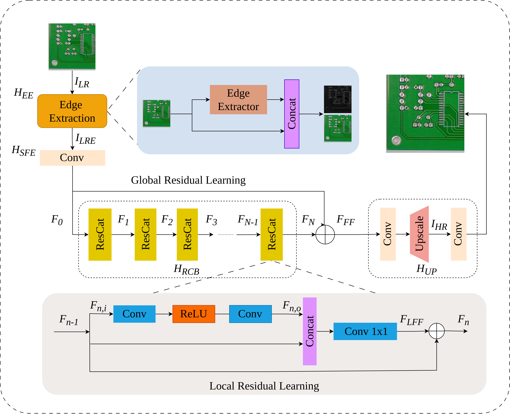
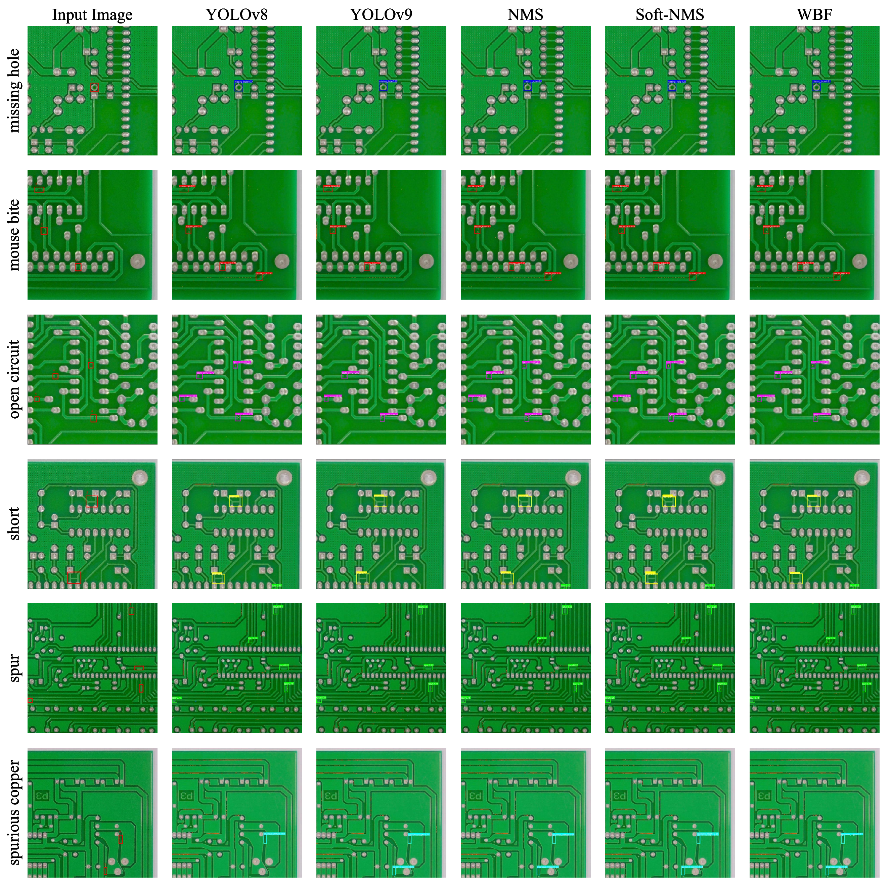

Edge-Guided Reconstruction
Edge features guide super-resolution toward boundaries and small structural details that matter for PCB inspection.
An Edge-Guided Super-Resolution Model and Ensemble Learning for Tiny Printed Circuit Board Defect Detection
Engineering Applications of Artificial Intelligence · 2025
VNU University of Engineering and Technology · Japan Advanced Institute of Science and Technology · Hanoi University of Industry
Enhancing tiny PCB defect detection by recovering structural detail before recognition.

Tiny defects in low-resolution printed circuit board images can be difficult to distinguish from noise. ESRPCB addresses this problem by combining an edge-guided super-resolution network with ensemble defect detection. The super-resolution stage uses structural edge information and a Residual Concatenation (ResCat) design to recover high-frequency detail, while the detection stage combines complementary predictions to improve robustness across defect types.
Edge features guide super-resolution toward boundaries and small structural details that matter for PCB inspection.
Residual concatenation combines local and global information while preserving a direct path for image reconstruction.
Multiple detector outputs are fused to reduce missed defects and produce more reliable final predictions.
The framework first reconstructs a high-resolution PCB image with edge-aware super-resolution, then applies ensemble learning to localize tiny defects.
The examples compare individual detectors and fusion strategies across six PCB defect categories, including missing hole, mouse bite, open circuit, short, spur, and spurious copper.

@article{hoangvan2025esrpcb,
title = {ESRPCB: An Edge Guided Super-Resolution Model and Ensemble Learning for Tiny Printed Circuit Board Defect Detection},
author = {HoangVan, Xiem and Dinh, Dang Bui and Canh, Thanh Nguyen and Nguyen, Van-Truong},
journal = {Engineering Applications of Artificial Intelligence},
volume = {159},
pages = {111547},
year = {2025},
doi = {10.1016/j.engappai.2025.111547}
}